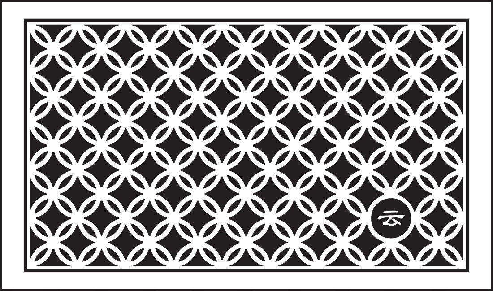
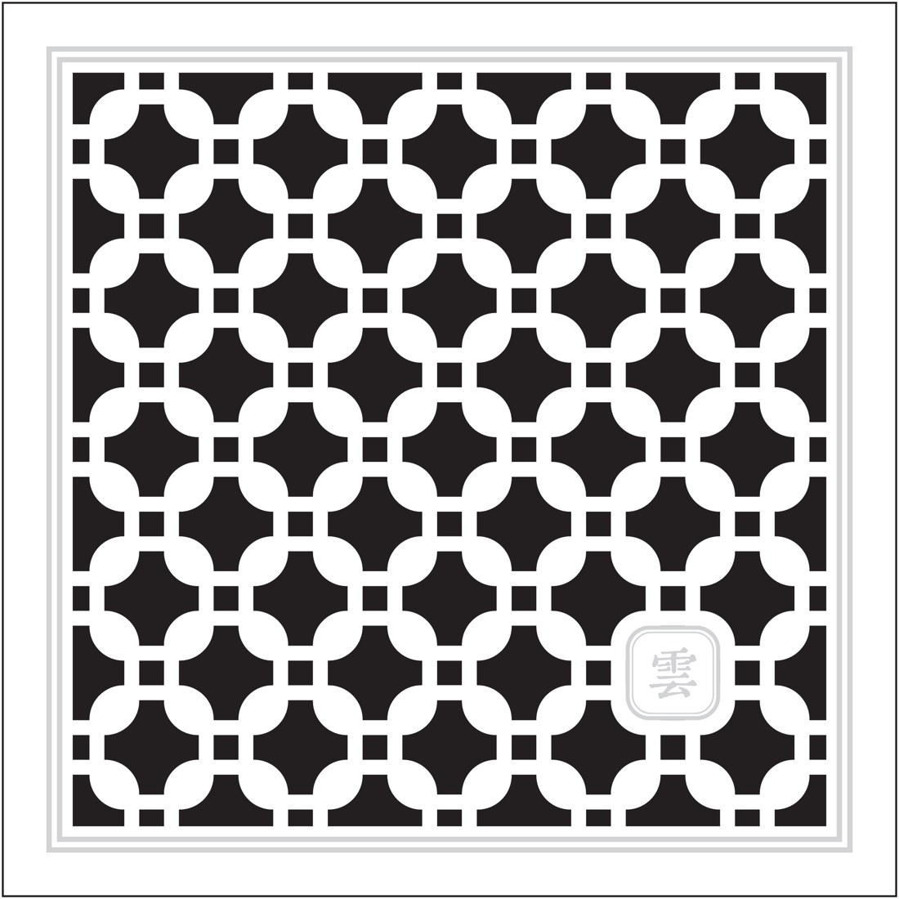
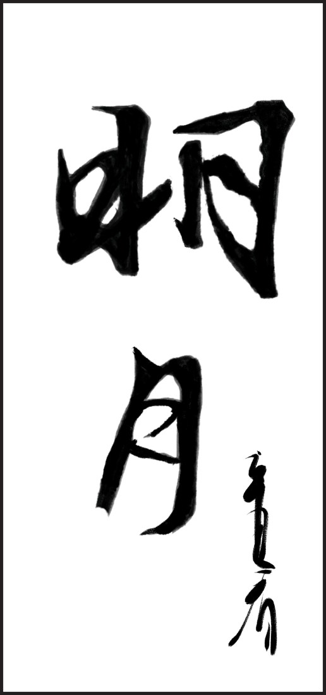
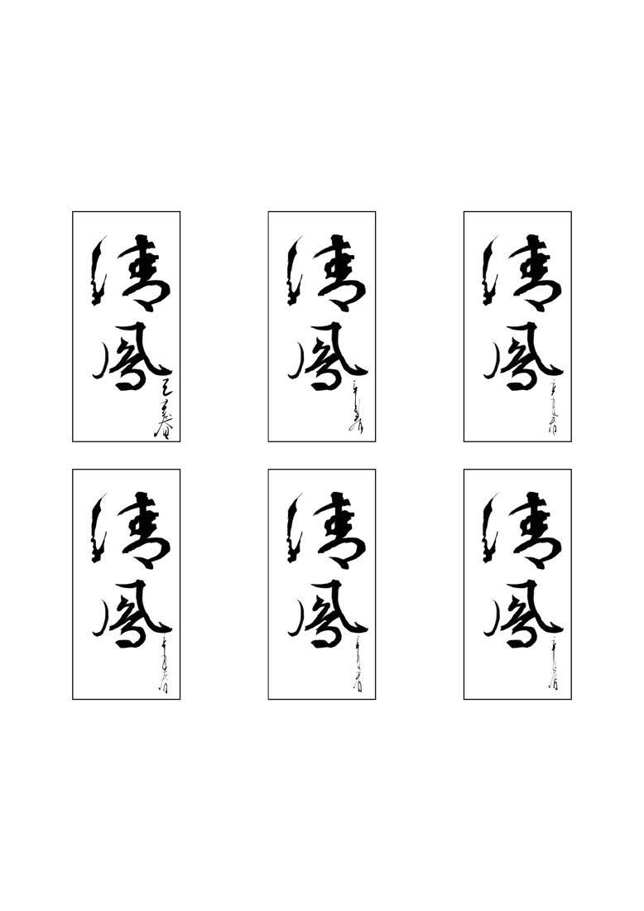
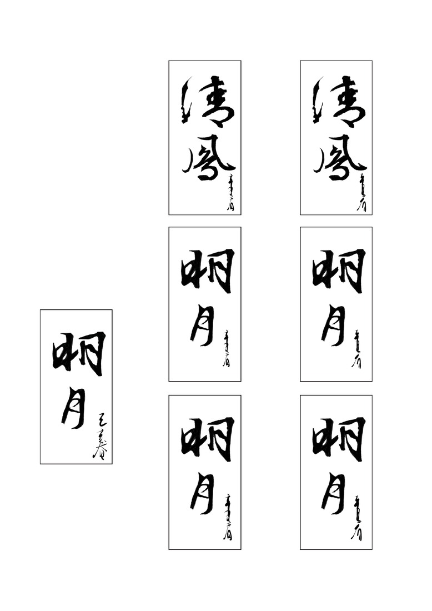
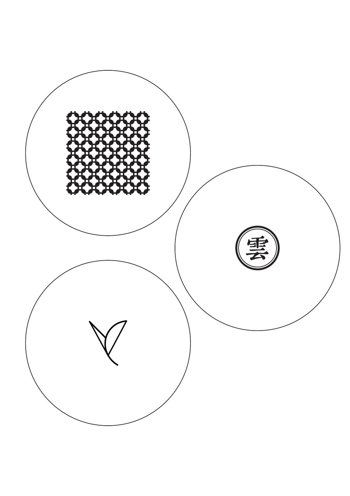
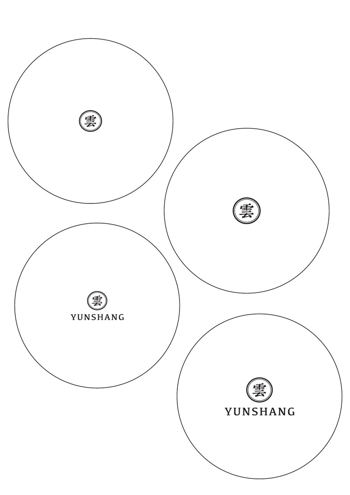

Box lids
Lid patterns for the rectangular box and the square gift set.




Tea labels
Calligraphic labels for Qingfeng and Mingyue.



Studies
Label and tin-cover explorations from 2021.
Label studies
Variations in lettering, signatures and spacing. Compare the finished tea labels.




Tin-cover studies
Exploring the lattice, leaf and cloud motifs on round covers.



